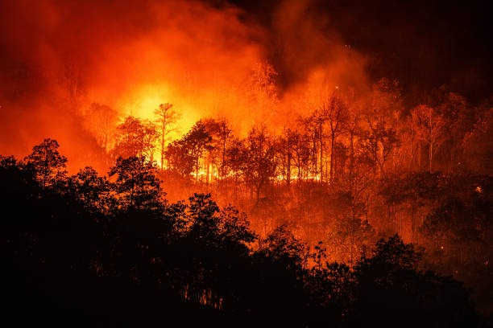

Introduction
Natural disasters can strike at any time, causing widespread damage and loss of life. Proper planning and preparedness can help mitigate the effects of these disasters. At disaster management work we believe that prevention is better than cure and hence work towards providing informantion to people on how to avoid the damages caused by Natural dsaster or get affected by them in minor manner.
Types of Natural Disasters

- Earthquakes
- Floods
- Heat waves
- Tsunamis
- Cyclones
- Land Slides
Preparedness Tips
It's crucial to be prepared for natural disasters. Here are some of tips to help you stay safe:
- Create an emergency kit with essentials like water, food, and first aid supplies.
- Develop a family emergency plan and make sure everyone knows what to do.
- Stay informed by monitoring local news and weather reports.
- Secure your home by reinforcing windows, doors, and roofs.
- look out in internet and other media sources for the information regarding the upcoming disasters.
Emergency Contacts
In case of an emergency, contact the following organizations:

- Local Emergency Services: 112
- National Disaster Response Force NDRF: 011-23438017
- National Disaster Management Authority NDMA : +91-11-26701700
Contact Us
Additional Resources
For more information on disaster preparedness and response, visit the following websites: